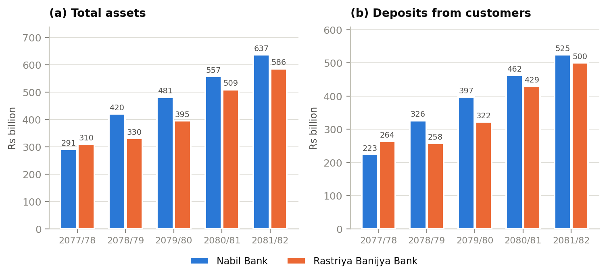
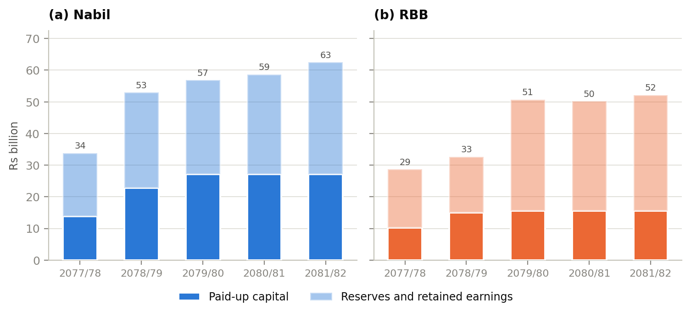
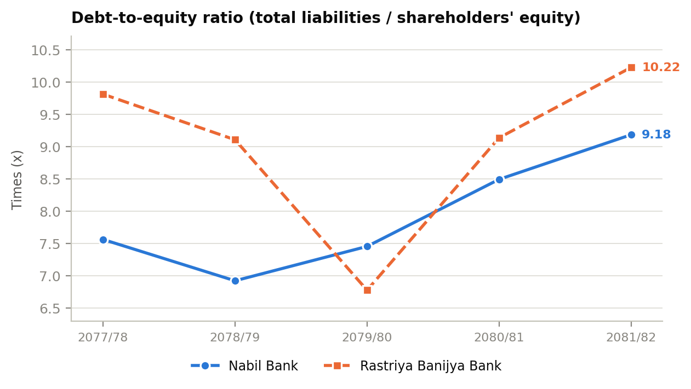
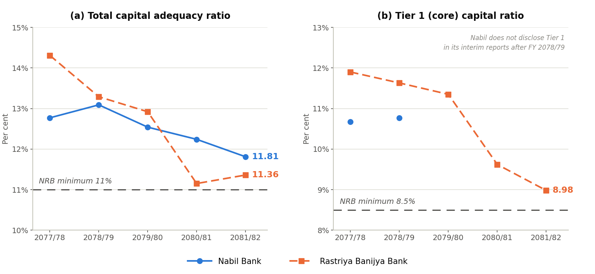
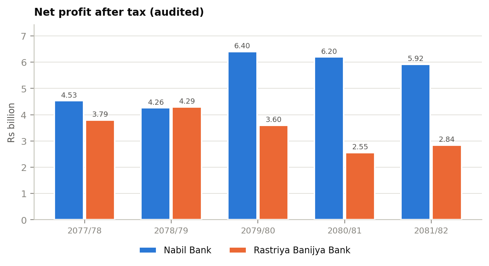
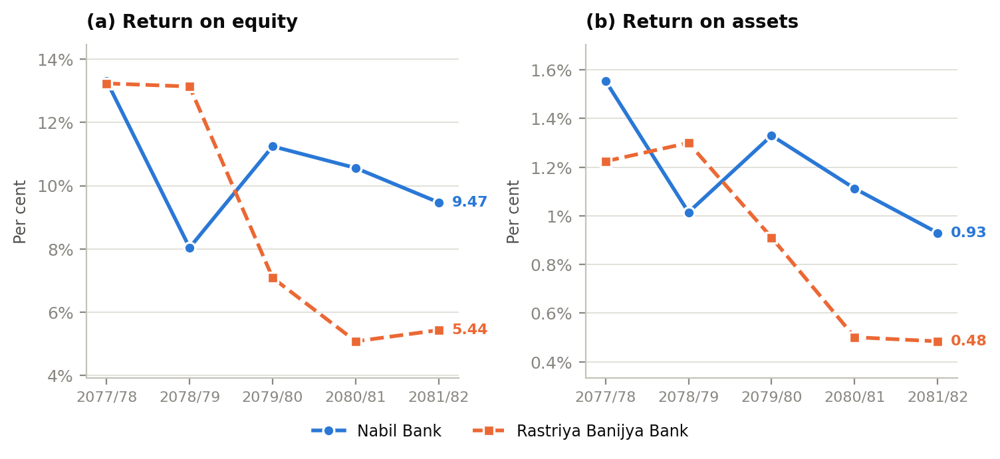
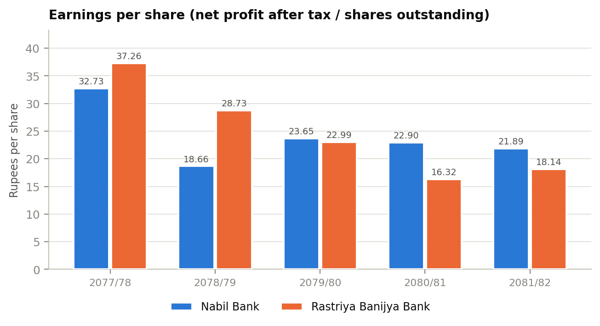
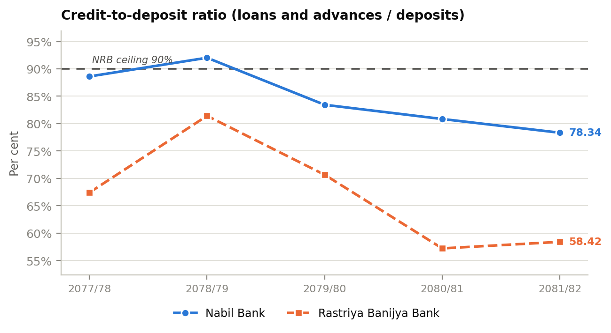

Final-year BBS Research · Findings
Three widely held assumptions about private versus government banks in Nepal do not survive the five-year audited record.
| Common assumption | What the data shows |
|---|---|
| The private bank is more leveraged | RBB is more leveraged in 4 of 5 years — 10.22× vs Nabil's 9.18× at the end |
| The government bank holds the thicker capital cushion | RBB's cushion fell 2.95 points and crossed below Nabil's in FY 2080/81 |
| The private bank's higher returns are structural | The gap opened during the period — ROE was identical in FY 2077/78, and RBB out-earned Nabil in FY 2078/79 |
What does hold up is a difference in financing flexibility and consistency, not in prudence or risk appetite.
RBB was actually the larger bank in FY 2077/78 — Rs. 309.99 bn against Nabil's Rs. 291.24 bn. Nabil overtook it in FY 2078/79, largely through the Nepal Bangladesh Bank acquisition.

| Rs. bn | Bank | 2077/78 | 2078/79 | 2079/80 | 2080/81 | 2081/82 |
|---|---|---|---|---|---|---|
| Total assets | Nabil | 291.24 | 419.82 | 481.20 | 557.02 | 636.79 |
| RBB | 309.99 | 330.24 | 394.68 | 509.18 | 585.65 | |
| Deposits | Nabil | 223.47 | 326.22 | 396.84 | 462.10 | 524.63 |
| RBB | 263.84 | 258.14 | 321.65 | 429.19 | 500.41 | |
| Loans | Nabil | 198.02 | 300.21 | 331.12 | 373.57 | 410.99 |
| RBB | 177.87 | 210.18 | 227.31 | 245.60 | 292.34 |
Scroll the table sideways to see all five years →
Deposits are 87–94% of total liabilities in every year, for both banks. Bank leverage is depositor funding, not distress-prone borrowing — and that has to be held in mind when reading the multiples that follow.
The equity mix splits exactly the way pecking-order theory predicts.

| Rs. bn | Bank | 2077/78 | 2078/79 | 2079/80 | 2080/81 | 2081/82 |
|---|---|---|---|---|---|---|
| Paid-up capital | Nabil | 13.84 | 22.83 | 27.06 | 27.06 | 27.06 |
| RBB | 10.19 | 14.94 | 15.64 | 15.64 | 15.64 | |
| Reserves | Nabil | 15.84 | 27.25 | 26.67 | 28.54 | 31.62 |
| RBB | 15.04 | 15.88 | 34.18 | 35.82 | 37.39 | |
| Retained earnings | Nabil | 4.16 | 2.90 | 3.19 | 3.08 | 3.86 |
| RBB | 3.45 | 1.86 | 0.92 | −1.22 | −0.85 | |
| Total equity | Nabil | 34.01 | 52.98 | 56.91 | 58.68 | 62.53 |
| RBB | 28.67 | 32.68 | 50.74 | 50.24 | 52.18 |
Scroll the table sideways to see all five years →
Nabil, able to raise equity from the market, nearly doubled its paid-up capital (Rs. 13.84 bn → 27.06 bn). RBB, which cannot readily issue shares, grew its far less (Rs. 10.19 bn → 15.64 bn) and leans on reserves for about 70% of its equity against Nabil's 53–57%.
The critical finding: RBB's retained earnings turned negative in FY 2080/81 (−Rs. 1.22 bn) and stayed negative. No distributable profit, and — for a bank whose only realistic route to fresh capital is profit retention — no internal capital generation. This is the mechanism behind everything in section 5.
The claim that the private bank runs the riskier balance sheet is the one the data contradicts most directly.

| Measure | 2077/78 | 2078/79 | 2079/80 | 2080/81 | 2081/82 |
|---|---|---|---|---|---|
| Nabil D/E (times) | 7.56 | 6.92 | 7.46 | 8.49 | 9.18 |
| RBB D/E (times) | 9.81 | 9.11 | 6.78 * | 9.14 | 10.22 |
| Nabil equity-to-assets (%) | 11.68 | 12.62 | 11.83 | 10.53 | 9.82 |
| RBB equity-to-assets (%) | 9.25 | 9.90 | 12.86 | 9.87 | 8.91 |
* FY 2079/80 is the single exception — a one-off reserve injection lifted RBB's equity by roughly Rs. 18 bn in twelve months.
RBB carries the higher debt-to-equity ratio in four of the five years. A study sampling only FY 2079/80 reaches the opposite conclusion to the one the full series supports.
Both banks levered up. Equity-to-assets fell at both: 11.68% → 9.82% at Nabil, 9.25% → 8.91% at RBB. Asset growth outran capital formation everywhere.
The narrow measure flips the story: excluding deposits, Nabil borrows more. Its debentures grew 4.6× (Rs. 2.10 bn → 9.63 bn) against RBB's doubling to Rs. 5.00 bn. Both are using subordinated debt as cheap Tier 2 capital — trade-off theory operating inside a regulatory cage.
Neither bank was ever capital-deficient. But the trajectories run opposite.

| Per cent | 2077/78 | 2078/79 | 2079/80 | 2080/81 | 2081/82 |
|---|---|---|---|---|---|
| Nabil CAR | 12.77 | 13.09 | 12.54 | 12.24 | 11.81 |
| RBB CAR | 14.31 | 13.29 | 12.92 | 11.15 | 11.36 |
| NRB minimum | 11.00 | 11.00 | 11.00 | 11.00 | 11.00 |
| Nabil Tier 1 | 10.67 | 10.77 | |||
| RBB Tier 1 | 11.90 | 11.63 | 11.35 | 9.62 | 8.98 |
| NRB minimum | 8.50 | 8.50 | 8.50 | 8.50 | 8.50 |
Nabil does not disclose its Tier 1 ratio after FY 2078/79. Those cells are left blank, never estimated.
RBB started with the thicker cushion and ended with the thinner one. Its CAR fell 2.95 percentage points (14.31% → 11.36%), crossed below Nabil's in FY 2080/81, and touched 11.15% — 0.15 points above the floor. Nabil's fell just 0.96 points.
The Tier 1 series is starker. RBB's core capital ratio fell from 11.90% to 8.98% — 0.48 percentage points of headroom above the 8.5% minimum. Tier 1 is the genuinely loss-absorbing capital, so this is the binding constraint, and the tightest number in the whole study.
Why it happened: RBB's loan book grew 64%, pushing risk-weighted assets (the denominator) up, while negative retained earnings cut off the numerator. A bank that cannot issue equity, cannot retain profit it hasn't earned, and is growing risk-weighted assets has only one direction its capital ratio can go.
Three things stand out, and only the third matches expectations.


| Measure | 2077/78 | 2078/79 | 2079/80 | 2080/81 | 2081/82 |
|---|---|---|---|---|---|
| Nabil profit (Rs. bn) | 4.53 | 4.26 | 6.40 | 6.20 | 5.92 |
| RBB profit (Rs. bn) | 3.80 | 4.29 | 3.60 | 2.55 | 2.84 |
| Nabil ROE (%) | 13.32 | 8.04 | 11.25 | 10.56 | 9.47 |
| RBB ROE (%) | 13.23 | 13.14 | 7.09 | 5.08 | 5.44 |
| Nabil ROA (%) | 1.56 | 1.01 | 1.33 | 1.11 | 0.93 |
| RBB ROA (%) | 1.22 | 1.30 | 0.91 | 0.50 | 0.48 |
Scroll the table sideways to see all five years →
Returns fell everywhere. Nabil's ROA 1.56% → 0.93%, RBB's 1.22% → 0.48%. Ownership insulated neither bank from the credit cycle.
The gap opened; it isn't structural. ROE was effectively identical in FY 2077/78 (13.32 vs 13.23). In FY 2078/79 RBB out-performed Nabil on both ROE (13.14 vs 8.04) and absolute profit (Rs. 4.29 bn vs 4.26 bn) — the year Nabil absorbed the Nepal Bangladesh Bank acquisition costs. Divergence starts in FY 2079/80 and peaks at roughly 2.1× in FY 2080/81.
Nabil is more profitable and far more consistent. Mean ROE 10.53% vs 8.79%; mean ROA 1.19% vs 0.88%. More tellingly, its coefficient of variation is 18.8% against RBB's 46.4% on ROE. The private bank's earnings aren't just higher — they're about half as volatile.
The most counter-intuitive result in the study.

| Rs. | 2077/78 | 2078/79 | 2079/80 | 2080/81 | 2081/82 | Mean |
|---|---|---|---|---|---|---|
| Nabil | 32.73 | 18.66 | 23.65 | 22.90 | 21.89 | 23.97 |
| RBB | 37.26 | 28.73 | 22.99 | 16.32 | 18.14 | 24.69 |
Scroll the table sideways to see all five years →
In FY 2077/78 RBB earned less profit than Nabil (Rs. 3.80 bn vs 4.53 bn) yet reported a higher EPS (Rs. 37.26 vs 32.73). The whole explanation is the denominator: RBB's share base was roughly half Nabil's.
Over five years RBB's mean EPS (Rs. 24.69) exceeds Nabil's (Rs. 23.97) — despite Nabil earning more profit in four of five years and posting materially higher returns throughout.
EPS measures capitalisation policy as much as efficiency, and can move opposite to the return ratios. ROE and ROA relate profit to the full capital base and give the truer picture. And since RBB is unlisted, its EPS carries none of the market-valuation meaning Nabil's does.

| Per cent | 2077/78 | 2078/79 | 2079/80 | 2080/81 | 2081/82 |
|---|---|---|---|---|---|
| Nabil credit-to-deposit | 88.61 | 92.03 | 83.44 | 80.84 | 78.34 |
| RBB credit-to-deposit | 67.42 | 81.42 | 70.67 | 57.22 | 58.42 |
| Nabil NPL | 0.84 | 1.62 | 4.45 | ||
| RBB NPL | 4.28 | 3.59 |
NPL data is incomplete for both banks. Blank cells are undisclosed figures, never estimated.
Nabil lends far more of its deposits — mean 84.65% against 67.03% — and breached the 90% regulatory ceiling in FY 2078/79 (92.03%) before pulling back to 78.34%. RBB's ratio is among the lowest in the industry, reflecting its public-service role and lower risk appetite.
Asset quality moved in opposite directions. Nabil's NPL rose 0.84% → 4.45%; RBB's fell 4.28% → 3.59%. The aggressive lender's book deteriorated while the conservative lender's improved — which complicates the conventional narrative considerably.
| Ratio | Bank | Mean | SD | CV (%) |
|---|---|---|---|---|
| D/E (times) | Nabil | 7.92 | 0.90 | 11.4 |
| RBB | 9.01 | 1.33 | 14.8 | |
| CAR (%) | Nabil | 12.49 | 0.49 | 3.9 |
| RBB | 12.61 | 1.34 | 10.6 | |
| ROE (%) | Nabil | 10.53 | 1.98 | 18.8 |
| RBB | 8.79 | 4.08 | 46.4 | |
| ROA (%) | Nabil | 1.19 | 0.25 | 21.3 |
| RBB | 0.88 | 0.39 | 43.7 | |
| EPS (Rs.) | Nabil | 23.97 | 5.26 | 21.9 |
| RBB | 24.69 | 8.52 | 34.5 | |
| CD ratio (%) | Nabil | 84.65 | 5.61 | 6.6 |
| RBB | 67.03 | 9.88 | 14.7 |
CV = coefficient of variation (standard deviation ÷ mean × 100). Lower is steadier; the lower of each pair is highlighted.
Nabil records the lower coefficient of variation on every ratio in the table. Its CAR has a CV of 3.9% against RBB's 10.6% — deliberate, consistent capital management against a drifting position.
| Karl Pearson r | Nabil | RBB |
|---|---|---|
| CAR vs ROA | +0.40 | +0.94 |
| CAR vs ROE | +0.01 | +0.90 |
| CD ratio vs ROA | +0.34 | +0.88 |
| D/E vs ROE | −0.02 | +0.15 |
| D/E vs ROA | −0.43 | −0.14 |
| Equity-to-assets vs ROE | −0.04 | −0.18 |
n = 5. Descriptive co-movement, not significance tests.
The contrast between the two columns is the study's cleanest result.
For RBB, capital adequacy and profitability move nearly in lockstep — r = +0.94 with ROA, +0.90 with ROE. They aren't independent levers; they're two readings of the same condition. A bank that can't generate retained earnings can't rebuild capital.
For Nabil, the same coefficients sit near zero (+0.40, +0.01). Capital position and profitability are effectively decoupled — exactly what you'd expect from a bank that can raise equity externally and issue debentures at will.
Note also that D/E vs ROA is negative for both banks (−0.43, −0.14). Over this period more leverage went with lower asset returns, not higher — consistent with Siddik et al. (2017), and against the simple trade-off intuition.
RBB, locked out of equity markets, grows capital through retained earnings and debentures; its equity is 70% reserves. When retained earnings turned negative, its capital ratio started falling — precisely the sequence the theory predicts for a firm at the end of its financing hierarchy. The near-zero correlation between Nabil's CAR and its profitability, against RBB's +0.90, is essentially a measurement of the difference in financing flexibility.
Both banks converge toward the regulatory floor rather than toward a firm-specific optimum, and both use debentures — cheap, Tier 2-eligible, non-dilutive — to prop up their ratios. The NRB minimum, not the theoretical balance of tax shields against distress costs, is the operative target.
Nabil's higher and far steadier returns fit sharper incentives in a listed institution. But the two banks earned near-identical ROE in FY 2077/78 and RBB out-earned Nabil in FY 2078/79 — so the incentive difference isn't a permanent performance premium. It shows up as differential resilience: when the credit cycle turned, the private bank absorbed the shock better.
The expectation is that the private bank takes more risk and the state bank holds more capital. By the end of the period the evidence runs the other way on both counts: RBB is more leveraged, holds the thinner buffer, and has under half a point of Tier 1 headroom — while lending conservatively. A low credit-to-deposit ratio combined with a thin, falling capital ratio is unusual, and it points to a capital problem originating in weak internal capital generation, not aggressive risk-taking. Meanwhile Nabil's asset quality deteriorated sharply even as its capital position held up.
Audited profit proved 12–27% below the unaudited Q4 figures, and the relative leverage of the two banks reverses depending on which single year you pick. Conclusions drawn from a one-year snapshot of unaudited data would have been wrong on several of the central questions this study set out to answer. How the data was handled →
The capital position is the pressing issue. Tier 1 at 8.98% against an 8.5% minimum leaves almost no room for loan growth or an adverse credit event. With negative retained earnings closing off internal capital generation, restoring the buffer needs one of: a capital injection from the Government of Nepal as sole shareholder, further Tier 2 debenture issuance, or restrained risk-weighted asset growth. Raising returns on a very large, under-lent asset base — a credit-to-deposit ratio of 58% is among the industry's lowest — would address the capital problem and the profitability problem at once.
Capital is comparatively well managed; asset quality is not. NPL rising 0.84% → 4.45%, alongside a 75% increase in the FY 2081/82 impairment charge on audit, indicates that the aggressive lending of the earlier years is now feeding through to credit losses. Sustained provisioning discipline and continued moderation of the credit-to-deposit ratio should be the priority.
How the study was done → ← Back to home Download Résumé (PDF)